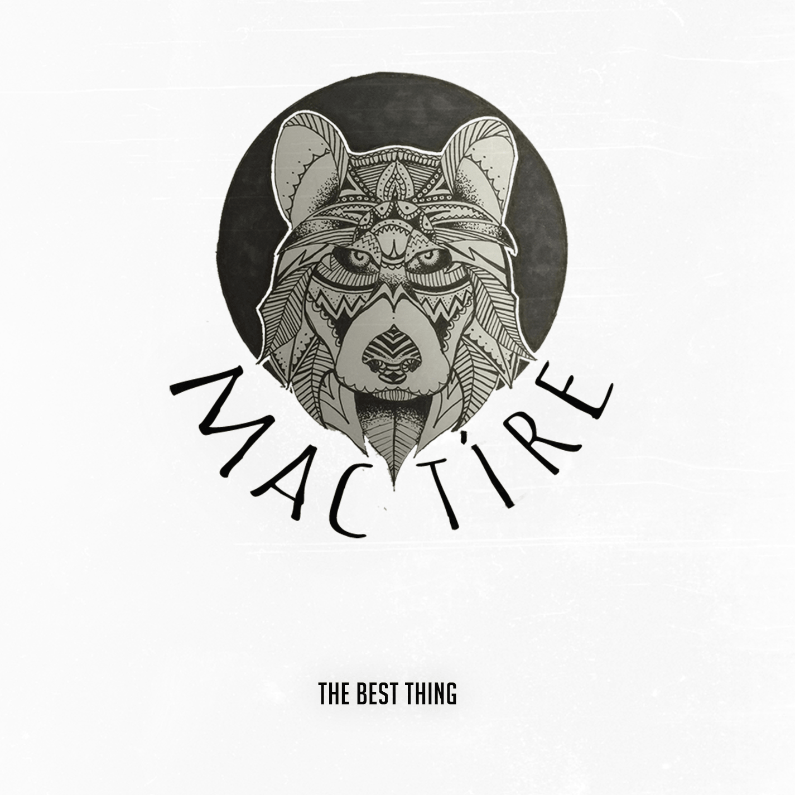

Music

The Best Thing

BMC Live Session
Released 18th of April 2016
Tracklist
- 1. The Best Thing
- 2. Trusting Faith
- 3. Play it Cool
Mac Tíre is a 22 year-old singer/songwriter from Bangor, Northern Ireland who has recently begun working with Unmute Records. Mac Tíre’s main influences are The Paper Kites, Ben Howard, Tom Odell, The Kooks & Cage the Elephant. Mac Tíre has been honing his art since 2013 and releasing it through social media platforms.
Mac Tíre and the team at Unmute Records are enthusiastic and excited to bring him and his songs to a wider audience through interviews, recordings, radio spots and live performances.
02/05/2016
NEW RELEASE! Mac Tíre’s new single, “The Best Thing”, is now available on Spotify and Soundcloud! We all hope you enjoy this track and look forward too more content from Mac Tíre....
Read More29/04/2016
Learn more about Unmute Record's new talented artist Mac Tíre in this new video interview, filmed in the Belfast Metropolitan College studio! A Full transcription of the interview can also be found below: Tell us more about yourself… “I'm a town boy from Bangor. My family took me camping sinc...
Read More28/04/2016
Unmute Records and Mac Tire recently met up and took some pictures leading up to the launch of his new single, “The Best Thing”. More pictures and media content coming very soon! Check out the pictures on the Unmute Records Facebook Page....
Read More10/05/16
Bennigans
TBA
Derry, Northern Ireland
17/05/16
The King Kong Club
TBA
Dublin, Republic of Ireland
Mac Tíre can be reached via his Facebook Page or on Soundcloud. All booking requests should be sent to unmuterecords AT gmail.com or the Unmute Records Facebook.